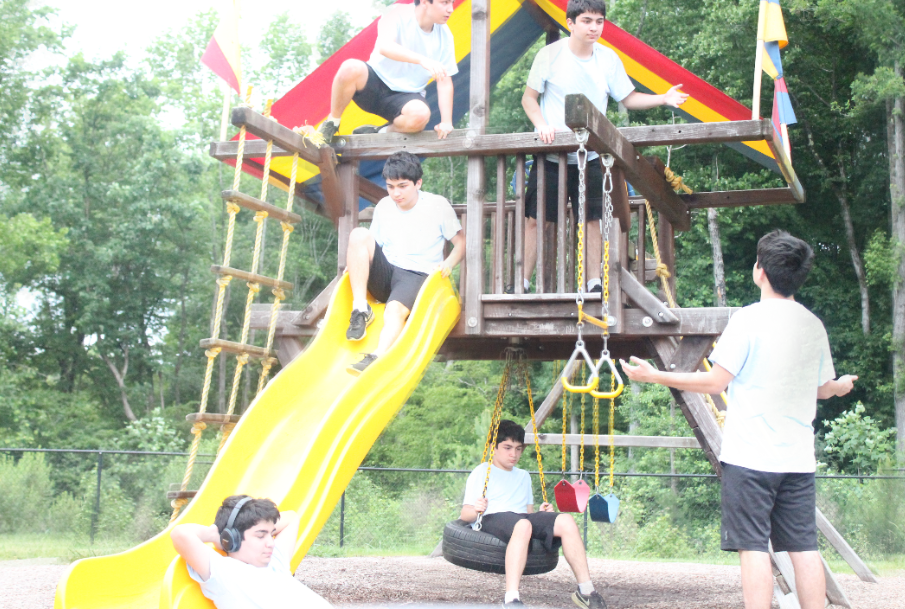
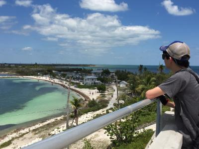

How Did I Get Into Photography?
It started a couple years ago, To be honest I really started it as I needed a hobby to do as I had decided to stop playing soccer and needed to find something to do. And after Drafting fell through, I now had the room to take a photography class! And that is pretty much it, nothing really more than that.
I really learned a lot through that class and am really glad I took it. I know like to take landscape shots as well as have fun editing photos using photoshop, which I also learned from taking a class.
What Happened With Drafting?
 As I said earlier, I had some problems with Drafting that led to me dropping it. Well for the longest time I had wanted to be an architect and had taken a class my Freshmen year. When Sophmore year came around there were some problems. The old teacher had to leave and we got a brand new one, but unfortunately it was his first time teaching. It was not the guys fault, but I was starting to gain some doubt in my career path and the poor experience I had with this new teacher led me to drop the idea of being an architect entirely.
As I said earlier, I had some problems with Drafting that led to me dropping it. Well for the longest time I had wanted to be an architect and had taken a class my Freshmen year. When Sophmore year came around there were some problems. The old teacher had to leave and we got a brand new one, but unfortunately it was his first time teaching. It was not the guys fault, but I was starting to gain some doubt in my career path and the poor experience I had with this new teacher led me to drop the idea of being an architect entirely.
What Am I Up To Now?
Ever since Drafting fell through I put more of a focus on Math. While it might seem weird I took up a career path in math despite the fact I enjoy photography, I am fine with it. I want to keep photography as a hobby, and want my actual life to more geared to what I feel I am really good at- Math. So now I am enrolled in multiple Calculus and Statistics classes and yes it is just as hard as you think it is, and yes I am stressing out. But, I think I'll make it, I always have in the past.